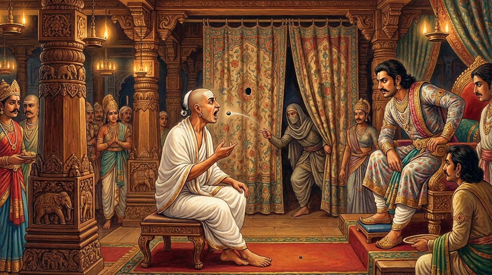

7. සාලිත්තක ජාතකය (107)
“සාධු ඛො සිප්පකං නාම” යනාදී මෙම ජාතක කථාව බුදුරජාණන් වහන්සේ ජේතවනාරාමයේ වැඩ වසන සමයෙහි හංසයෙකුට පහර දුන් භික්ෂුවක් අරභයා දේශනා කළහ. සැවැත් නුවර විසූ එක්තරා කුල පුත්රයෙක් ‘සාලිත්තක’ ශිල්පයෙහි හෙවත් ගල් කැට විදීමේ කලාවෙහි අතිශය නිපුණත්වයට පත්ව සිටියේය. හෙතෙම එක් දිනක් බණ අසා සසුනෙහි පැහැදී පැවිදි වී උපසම්පදාව ද ලැබුවේය. එහෙත් ඔහු ශික්ෂාකාමී භික්ෂුවක් නොවීය; ප්රතිපත්ති පූරණය කරන්නෙක් ද නොවීය. දිනක් ඔහු තවත් ලාබාල භික්ෂුවක් සමග අචිරවතී නදියට ගොස් නාමින් ගං ඉවුරේ සිටියේය. ඒ මොහොතේ සුදු හංසයෝ දෙදෙනෙක් අහසින් යමින් සිටියහ. ඔහු අර ලාබාල භික්ෂුව අමතා, “මම මේ පසුව යන හංසයාගේ ඇසට කැටයකින් ගසා උගේ පාමුලට හෙළමි” යි කීවේය. අනෙක් භික්ෂුව, “ඔබට එය කෙසේ කළ හැකිද? පහර දීමට නොහැකි වනු ඇතැ” යි කීවේය. එවිට ඔහු, “උගේ මේ පැත්තේ ඇස තිබුණාවේ, මම අනෙක් පැත්තේ (එපිට) ඇසට පහර දෙන්නෙමි” යි පැවසීය. අනෙක් භික්ෂුව, “දැන් ඔබ නොවන දෙයක් කියන්නෙහිය” යි කී විට, “එසේ නම් බලා සිටින්න” යි කියා, එක් තුන්හුලස් කැටයක් ගෙන ඇඟිලි අතර රඳවා හංසයාගේ පිටුපසට විද්දේය. එයින් “රූ” යන ශබ්දයක් නැගිණි. හංසයා “කිසියම් උවදුරක් විය යුතුය” යි සිතා නැවතී ඒ ශබ්දය කුමක්දැයි සවන් දීමට පටන් ගත්තේය. ඒ ක්ෂණයේම (කැට විදින භික්ෂුව) වටකුරු කැටයක් ගෙන, ආපසු හැරී බලමින් සිටි හංසයාගේ අනෙක් පස ඇසට විද්දේය. ඒ කැටය අනෙක් ඇස ද සිදුරු කරගෙන පිටව ගියේය. හංසයා මහා හඬින් කෑගසමින් ඔහුගේ පාමුලම ඇද වැටුණේය. එකල භික්ෂූන් එතැනට රැස්ව ඔහුට දෝෂාරෝපණය කර, “ඔබ කළේ නුසුදුසු දෙයකැ” යි පවසා බුදුරජාණන් වහන්සේ වෙත කැඳවාගෙන ගොස්, “ස්වාමීනි, මොහු විසින් මෙවැනි දෙයක් කරන ලදී” යි ඒ බව දැන්වූහ. ශාස්තෘන් වහන්සේ ඒ භික්ෂුවට ගර්හා කොට, “මහණෙනි, මොහු මේ ශිල්පයෙහි දක්ෂ වූයේ දැන් පමණක් නොවේ, පෙරත් දක්ෂයෙක්ම විය” යි වදාරා අතීත කථාව ගෙනහැර දැක්වූහ.
අතීතයේ බරණැස් නුවර බ්රහ්මදත්ත රජු රාජ්ය කරන සමයේ බෝධිසත්වයෝ ඔහුගේ අමාත්යවරයෙක් වූහ. එකල රජුගේ පුරෝහිත බමුණා ඉතා මුඛරි අයෙක් විය; බොහෝ කථා කරන්නෙක් විය. ඔහු කථා කිරීමට පටන් ගත් විට වෙනත් කිසිවෙකුට අවස්ථාවක් නොලැබේ. රජතුමා, “මොහුගේ කථාව නැවැත්වීමට (වචන සිඳලීමට) සමතෙක් කවදා නම් ලබම්දෝ” යි සිතමින් පසුවිය. එතැන් පටන් රජු එවැනි අයෙක් සොයමින් විපරම් කළේය. එකල බරණැස් නුවර එක් පීඨසර්පී (කොර) මිනිසෙක් කැට විදීමේ ශිල්පයෙහි අති දක්ෂව සිටියේය. ගමේ දරුවන් ඔහු කුඩා කරත්තයක නංවාගෙන ඇදගෙන ගොස්, බරණැස් නුවර දොරටුව අසල අතු පතර විහිදුණු විශාල නුග රුකක් විය, එතැනට පමුණුවා ඔහු පිරිවරාගෙන, පනම් හා කහවනු ආදිය දී, “ඇත් රූපයක් මවන්න, අශ්ව රූපයක් මවන්න” යි කියති. ඔහු ද ගල් කැට විදිමින් නුග පත්වල විවිධ රූප සටහන් මවයි. මේ අයුරින් ගසේ සියලුම කොළ සිදුරු බවට පත්ව තිබුණි.
ඉන්පසු දිනක් බරණැස් රජු උයනට යන්නේ ඒ ස්ථානයට පැමිණියේය. රජුගේ පෙරගමන්කරුවන් එළවා දමතැයි බියෙන් සියලු දරුවෝ පලා ගියහ. කොර මිනිසා එතැනම වැතිරී සිටියේය. රජු නුග රුක මුලට පැමිණ රථයේ සිටියදීම, කොළවල ඇති සිදුරු හේතුවෙන් පොළොවට වැටෙන සෙවණැල්ල විචිත්ර ලෙස (පුල්ලි වැටී) තිබෙනු දැක, ඉහළ බැලූ විට සියලු කොළ සිදුරු වී ඇති බව දුටුවේය. “මේවා මෙසේ කරන ලද්දේ කවුරුන් විසින්දැ” යි රජු විමසීය. “දේවයන් වහන්ස, අර කොර මිනිසා විසිනි” යි අවට සිටියෝ කීහ. රජතුමා, “මොහු උපයෝගී කරගෙන බමුණාගේ කථාව සිඳලීමට (කට වැසීමට) හැකි වන්නේය” යි සිතා, “එම කොර මිනිසා කොහිදැ” යි ඇසීය. සොයන විට ගස මුල වැතිර සිටින ඔහු දැක, “දේවයන් වහන්ස, මේ ඉන්නේ” යි කීහ. රජු ඔහු කැඳවා පිරිස පසෙකට කර, “අප ළඟ එක් මුඛරි බමුණෙක් සිටී. ඔහු නිහඬ කිරීමට ඔබට හැකිදැ” යි ඇසීය. “දේවයන් වහන්ස, නැළියක් පමණ එළු බෙටි ලැබෙන්නේ නම් මට එය කළ හැකිය” යි ඔහු කීවේය. රජු කොර මිනිසා රජ මාලිගයට ගෙන්වා, තිරයක් ඇද ඊට පිටුපසින් හිඳුවා, තිරයේ සිදුරක් සාදවා, බමුණාට ඒ සිදුරට මුහුණ ලා සිටින සේ ආසනයක් පනවා, වියළි එළු බෙටි නැළියක් පමණ කොර මිනිසා ළඟ තැබවීය. පසුව පුරෝහිත බමුණා රාජ සේවයට පැමිණි විට ඒ අසුනේ හිඳුවා කථාව ආරම්භ කළේය. බමුණා වෙනත් කිසිවෙකුට ඉඩක් නොදී රජු සමඟ කථා කිරීමට පටන් ගත්තේය. එකෙනෙහිම අර කොර මිනිසා තිරයේ සිදුර තුළින් එක එක එළු බෙට්ට බැගින් ගෙන, පෙට්ටියකට මැස්සන් දමන්නාක් මෙන් බමුණාගේ තල්ලටම (උගුරටම) විද්දේය. බමුණා ද තමා දෙසට එන එන එළු බෙටි, නළයකට තෙල් වත් කරන්නාක් මෙන් ගිල දැමුවේය. සියලු එළු බෙටි අවසන් විය. ඔහුගේ කුසට ඇතුළු වූ ඒ එළු බෙටි ප්රමාණය අඩ ලාහක් පමණ විය.
රජතුමා එළු බෙටි අවසන් බව දැන මෙසේ කීවේය: “ආචාර්යයෙනි, ඔබගේ දැඩි මුඛරි බව නිසා එළු බෙටි නැළියක් පමණ ගිල දමද්දීත් ඒ බවක් නොදත්තෙහිය. මීට වඩා දිරවා ගැනීමට ඔබට නොහැකි වනු ඇත. දැන් යන්න, පුවඟු දිය පානය කර වමනය කොට ඔබව සුවපත් කරගන්න.” බමුණා එතැන් පටන් කට පියාගත් අයෙකු මෙන් වී, තමා සමඟ කථා කරන අය සමඟ පවා කථා නොකරන ස්වභාවයට පත් විය. රජතුමා “මොහු මගේ කනට සුවයක් ලබා දුන්නේය” යි සතුටු වී, එම කොර මිනිසාට සතර දිසාවෙන් ලක්ෂය බැගින් ආදායම ලැබෙන ගම් හතරක් ලබා දුන්නේය. බෝධිසත්වයෝ රජු වෙත ගොස්, “දේවයන් වහන්ස, ලෝකයේ පණ්ඩිතයන් විසින් ශිල්පයක් උගත යුතුය. මේ කොර මිනිසාට ගල් කැට විදීමේ ශිල්ප මාත්රයෙන් පවා මෙවැනි සම්පතක් ලැබුණේය” යි පවසා මෙම ගාථාව දේශනා කළහ.

“කෙබඳු වූ හෝ ශිල්පයක් වේවා, එය ඉගෙනීම යහපත්ය.
බලන්න, කොර මිනිසා (එළු බෙටි) විදීමෙන්,
සතර දිසාවෙන් ගම් සතරක් ලැබුවේය.”
එහි “පස්ස ඛඤ්ජප්පහාරෙන” යන්නෙන් අදහස් වන්නේ මෙයයි: පින්වත් මහරජ, බලන්න. මේ පීඨසර්පී (කොර) මිනිසාට එළු බෙටි විදීමෙන් පමණක් සතර දිසාවෙන් ගම් හතරක් ලබන ලදී. එසේ නම් අනෙක් උසස් ශිල්පවල ආනිශංස ගැන කියනුම කවරේද? මෙසේ (බෝධිසත්වයෝ) ශිල්පයේ ගුණ වර්ණනා කළහ.
ශාස්තෘන් වහන්සේ මෙම ධර්ම දේශනාව ගෙනහැර දක්වා ජාතකය ගළපා වදාළ සේක. “එකල කොර මිනිසා වූයේ (දැන් හංසයාට ගැසූ) මේ භික්ෂුවයි. රජතුමා වූයේ ආනන්ද තෙරුන්ය. පණ්ඩිත අමාත්යයා වූයේ මම ම වෙමි.”
සත්වන සාලිත්තක ජාතක වර්ණනාව නිමාවිය.